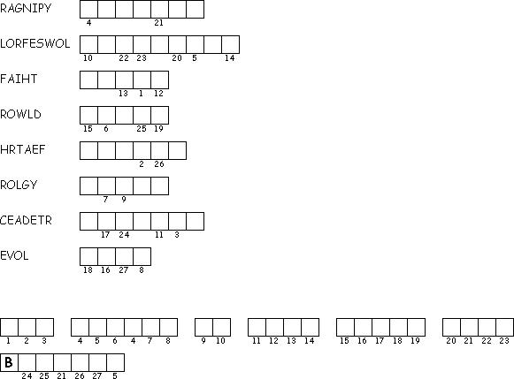

This Week: Acts 16:16-34, Psalm 97, Revelation 22:12-14, 16-17, 20-21, John 17:20-26
Elementary School Pew-work
Unscramble the bold words:
I am not rygpina ___________ just for these erfowolls ___________. I am also praying for everyone else who will have tfih a___________because of what my followers will say about me. I want all of them to be one with each other, just as I am one with you and you are one with me. I also want them to be one with us. Then the people of this ordwl ___________will believe that you sent me.
htreFa,___________ I want everyone you have given me to be with me, wherever I am. Then they will see the rgoyl___________ that you have given me, because you loved me before the world was erteacd___________. Good Father, the people of this world don't know you. But I know you, and my followers know that you sent me. I told them what you are like, and I will tell them even more. Then the vleo___________ that you have for me will become part of them, and I will be one with them.
Whom
is Jesus praying for?
_____________________________________________________
_______________________________________________________________________________
What
does Jesus want for his followers?
_________________________________________
________________________________________________________________________________
When
did God the father love Jesus?
_____________________________________________
________________________________________________________________________________

Created by Puzzlemaker at DiscoverySchool.com
Next week: Acts 2:1-21 or Genesis 11:1-9, Psalm 104:24-34, 35b, Romans 8:14-17 or Acts 2:1-21, John 14:8-17, (25-27)